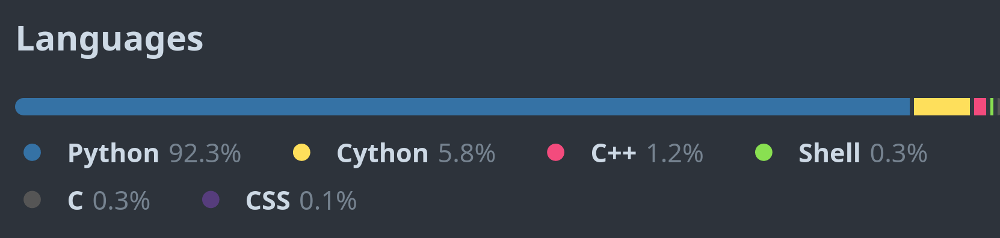
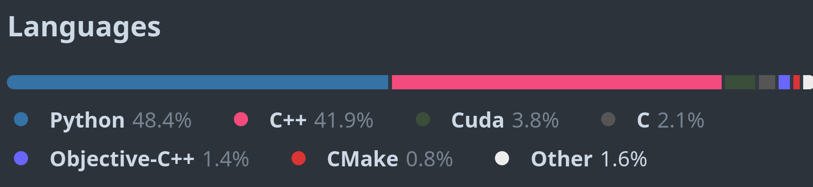

The art of extending Python with other languages
<<<<<<< HEAD
Dr. Cristián Maureira-Fredes
@cmaureir


 =======
Cristián
@cmaureir
=======
Cristián
@cmaureir
>>>>>>> 5ab8d2b (First version)
Motivación
Nuestro lenguaje üá®üá±
- "Cachar"
- to catch (Inglés)
- "Guagua"
- wawa (Quechua/Aymara)
- "Polola"
- piulliu (Mapuzugun)
- püchintun (Mapuzugun)
- huata (Mapuzugun)
- kawiñ (Mapuzugun)
El purismo tecnológico
no es la realidad
¿Qué ayudó a la
popularidad actual?
=======Languages
Relation between languages
Language evolutions
Learning some languages help understand others
- Scripting
- Web
- Scientific applications
- AI
What's helping
the current popularity
>>>>>>> 5ab8d2b (First version)NumPy

Pandas

Scikit-Learn
Tensorflow

PyTorch
Ruff

¿Por qué usar
otros lenguajes?
1. Familiaridad con
tecnologías nuevas
2. Software "antigüo"
3. Alcanzar otra
tecnología
4. "Python es lento"
- Alguna persona que conoces.
5. Los lenguajes compilados,
son más rápidos que los interpretados
¿Cuántos lenguajes de programación hay?
=======Why should we use
other languages?
1. Familiarity with
new technologies
2. "Old" software
3. Reach other
technologies
4. "Python is slow"
- Someone you might have met.
5. Compiled languages are faster
than interpreted ones
How many programming languages are out there?
>>>>>>> 5ab8d2b (First version)ü§î
Miremos uno en particular
=======Let's look one in particular
>>>>>>> 5ab8d2b (First version)üëÄ
HOW TO PRINT CELSIUS FROM a TO b:
PUT a, b IN lo, hi
IF lo > hi:
PUT hi, lo IN lo, hi \Swap hi and lo
FOR f IN {lo..hi}:
PUT (f-32)*5/9 IN c
WRITE f, "Fahrenheit =", 2 round c, "Celsius" /
ABC, Predecesor de Python
=======ABC, Python's predecesor
>>>>>>> 5ab8d2b (First version)Entendamos
=======Let's understand
>>>>>>> 5ab8d2b (First version)Python
ü§î
¿Cuál Python?
=======Which Python?
>>>>>>> 5ab8d2b (First version)Nos vamos a enfocar en la
implementación estándar:
CPython
⭐¿Tienes Interés en detalles de CPython?
El repo: github.com/python/cpythonOtras charlas: maureira.xyz/pages/talks.html
Extendiendo
CPython
=======We will focus on the
standard implementation: CPython
Understanding
CPython
(briefly)
>>>>>>> 5ab8d2b (First version)Tu primera extensión (1/2)
Partes del programa üß±- Funciones en el lenguaje adicional
- Definición de métodos para el módulo
- Definición del módulo
- Creación/inicialización del módulo =======
- Functions in the aditional language
- Methods definition for the module
- Module definition
- Module initialization >>>>>>> 5ab8d2b (First version)
Your first extension (1/2)
Parts of the program üß±Tu primera extensi√≥n (2/2)
=======Your first extension (2/2)
>>>>>>> 5ab8d2b (First version)
#include <Python.h>
static char simple_docs[] = "hola(): imprime hola :P\n";
static PyObject* simple_hola(PyObject* self, PyObject* args){
char *msg = "Holi desde CPython!";
return Py_BuildValue("s", msg);
}
static PyMethodDef simple_funcs[] = {
{"hola", // ml_name
(PyCFunction)simple_hola, // ml_meth
METH_NOARGS, // ml_flags
simple_docs}, // ml_doc
{NULL, NULL, NULL, NULL}
};
static struct PyModuleDef simplemodule = {
PyModuleDef_HEAD_INIT, // m_base
"simple", // m_name
NULL, // m_doc
-1, // m_size
simple_funcs // m_methods
};
PyMODINIT_FUNC PyInit_simple(void){
return PyModule_Create(&simplemodule);
}
# setup.py
from distutils.core import setup, Extension
setup(
name='simple',
version='1.0',
ext_modules=[Extension('simple',
['simple.c'])]
)
# Crear wheel
$ python -m build -w
>>> import simple
>>> simple.hola()
'Holi desde CPython'
Nota al margen
Foreign function interface (FFI)
Otros lenguages
de programación
=======Other programming
languages
>>>>>>> 5ab8d2b (First version)C++
-
<<<<<<< HEAD
- Extensión de C
- OO, Genérica, Funcional
- Manipulación de memoria de bajo nivel
- Desempeño, eficiencia y flexibilidad =======
- C extensions
- OOP, Generics, Functional
- Low-level memory manipulation
- Performance, eficiency, and flexibility >>>>>>> 5ab8d2b (First version)
- cppreference.com
#include <iostream>
using namespace std;
int main(int argc, char *argv[]) {
cout << "Hello, world!" << endl;
return 0;
}
$ g++ main.cpp -o main
$ ./main
Hello, world!
Python y C++
class Rectangle:
def __init__(self, width: int, height: int):
self.width : int = width;
self.height : int = height;
def set_values(self, x: int, y: int):
self.width = x;
self.height = y;
def area(self) -> int:
return self.width * self.height
def main():
rect = Rectangle()
rect.set_values(3,4);
print(f"area: {rect.area()}")
#include <iostream>
using namespace std;
class Rectangle {
int width, height;
public:
void set_values (int,int);
int area() {return width*height;}
};
void Rectangle::set_values(int x, int y) {
width = x;
height = y;
}
int main () {
Rectangle rect;
rect.set_values(3,4);
cout << "area: " << rect.area();
return 0;
}
La cercanía de C++ con Python (1/4)
=======The closeness of C++ to Python (1/4)
>>>>>>> 5ab8d2b (First version)
#include <string>
float add(int x, int y) {
return x + y;
}
int main()
{
auto a = 1 + 2; // a será un int
auto b = add(1, 2); // b será un float
auto n = {5}; // n será un std::initializerlist<int>
auto s1 = "hello"; // s1 será const char *
auto s2 = "hello"s; // s1 será std::string
return 0;
}
auto desde C++14
La cercanía de C++ con Python (2/4)
=======auto since C++14
The closeness of C++ to Python (2/4)
>>>>>>> 5ab8d2b (First version)
#include <iostream>
#include <ranges>
int main()
{
auto const ints = {0, 1, 2, 3, 4, 5};
for (int i : ints);
std::cout << i << ' ';
return 0;
}
ranges desde C++20
La cercanía de C++ con Python (3/4)
=======ranges since C++20
The closeness of C++ to Python (3/4)
>>>>>>> 5ab8d2b (First version)
#include <iostream>
#include <ranges>
int main()
{
constexpr static auto v = {'A', 'B', 'C', 'D'};
for (auto const [index, letter] : std::views::enumerate(v))
std::cout << '(' << index << ':' << letter << ") ";
std::cout << '\n';
return 0;
}
std::view::enumerate desde C++23
La cercanía de C++ con Python (4/4)
=======std::view::enumerate since C++23
The closeness of C++ to Python (4/4)
>>>>>>> 5ab8d2b (First version)
#include <print>
int main()
{
std::print("{0} {2}{1}!\n", "Hello", 23, "C++");
return 0;
}
std::print desde C++23
std::print since C++23
C++ - En resumen
=======C++ - Summary
>>>>>>> 5ab8d2b (First version)- Lenguaje muy utilizado
- Sin "un" administrador de paquetes
- Similitudes con Python
- Características pueden ser complejas
Delivering Safe C++ - Bjarne Stroustrup - CppCon 2023
Rust
- Desempeño
- Rápido y eficiente en memoria (no runtime o GC).
- Fiabilidad
- Sistema de tipos enriquecidos y modelo de propiedad (seguridad de memoria e hilos)
- Productividad
- Docs, compilador "amigable", administrador de paquetes, y herramientas de construcción
fn main() {
println!("Hello, world!");
}
$ rustc main.rs
$ ./main
Hello, world!
Python y Rust (1/2)
def main():
nums: List[int] = [1, 2, 3, 4, 5, 6]
five: int = nums[1] + nums[2];
print(f""Result: {five}")
fn main() {
let arr: [i32; 5] = [1, 2, 3, 4, 5];
let five = arr[1] + arr[2];
println!("Result: {}", five);
}
Python y Rust (2/2)
class Person:
def __init__(self, name: str, age: int):
self.name: str = name
self.age: int = age
def speak(self) -> None:
print(f"{self.name} says Hello!")
def main():
maria = Person(
name="Maria",
age=22
)
maria.speak()
// declare a struct
struct Person {
name: String,
age: i32
}
impl Person {
fn speak(&self){
println!("{} says Hello!", self.name);
}
}
fn main() {
let maria = Person{
name: String::from("Maria"),
age: 5
};
maria.speak();
}
Rust - En resumen
=======Rust - Summary
>>>>>>> 5ab8d2b (First version)- Manejo de memoria (Ownership & Borrowing)
- Herramientas (
cargo) - Ecosistema en crecimiento
- Aún un lenuaje en evolución
Rust for Python Developers - Swiss Python Summit 2022
Zig
- Sin control de flujo o asignación de memoria escondido
- Sin preprocesador, sin macros
- Metaprogramación: ejecución de código en tiempo de compilación y evaluación diferida (
comptime) - ¡Tests!
// main.zig
const std = @import("std");
pub fn main() !void {
const stdout = std.io.getStdOut().writer();
try stdout.print("Hello, {s}!\n", .{"world"});
}
$ zig build-exe main.zig
$ ./hello
Hello, world!
Python y Zig
class Rectangle:
def __init__(self, x, y):
self.x = x
self.y = y
def area(self):
return self.x * self.y
def main():
r = Rectangle(2.2, 3.3);
print(f"Rectangle area: {r.area()}")
const std = @import("std");
const Rectangle = struct {
x: f32,
y: f32,
pub fn init(x: f32, y: f32) Rectangle {
return Rectangle{.x = x, .y = y};
}
pub fn area(self: Rectangle) f32 {
return self.x * self.y;
}
};
pub fn main() !void {
const r = Rectangle.init(2.2, 3.3);
const stdout = std.io.getStdOut().writer();
try stdout.print("Rectangle area: {}\n",
.{r.area()});
}
Zig - En resumen
=======Zig - Summary
>>>>>>> 5ab8d2b (First version)- Más rápido y seguro que C (*)
- Integración con bibliotecas en C sin FFI/bindings
- Built-in framework para tests
comptime- Compilación cruzada incluida
Intro to the Zig Programming Language • Andrew Kelley • GOTO 2022
No olvidar Nim
import std/strformat
type
Person = object
name: string
age: Natural # Ensures the age is positive
let people = [
Person(name: "John", age: 45),
Person(name: "Kate", age: 30)
]
for person in people:
# Type-safe string interpolation,
# evaluated at compile time.
echo(fmt"{person.name} is {person.age} years old")
...hay muchos más lenguajes.
¿Cómo los podemos
utilizar?
Ya vimos el ejemplo de C
#include <Python.h>
static char simple_docs[] = "hola(): imprime hola :P\n";
static PyObject* simple_hola(PyObject* self, PyObject* args){
char *msg = "Holi desde CPython!";
return Py_BuildValue("s", msg);
}
static PyMethodDef simple_funcs[] = {
{"hola", // ml_name
(PyCFunction)simple_hola, // ml_meth
METH_NOARGS, // ml_flags
simple_docs}, // ml_doc
{NULL, NULL, NULL, NULL}
};
static struct PyModuleDef simplemodule = {
PyModuleDef_HEAD_INIT, // m_base
"simple", // m_name
NULL, // m_doc
-1, // m_size
simple_funcs // m_methods
};
PyMODINIT_FUNC PyInit_simple(void){
return PyModule_Create(&simplemodule);
}
# setup.py
from distutils.core import setup, Extension
setup(
name='simple',
version='1.0',
ext_modules=[Extension('simple',
['simple.c'])]
)
# Crear wheel
$ python -m build -w
Con C++ es casi lo mismo
#include <Python.h>
#include <string>
static char simple_docs[] = "hola(): imprime hola :P\n";
static PyObject* simple_hola(PyObject* self, PyObject* args){
std::string msg = "Holi desde CPython!";
return Py_BuildValue("s", msg.c_str());
}
static PyMethodDef simple_funcs[] = {
{"hola", // ml_name
(PyCFunction)simple_hola, // ml_meth
METH_NOARGS, // ml_flags
simple_docs}, // ml_doc
{NULL, NULL, NULL, NULL}
};
static struct PyModuleDef simplemodule = {
PyModuleDef_HEAD_INIT, // m_base
"simple", // m_name
NULL, // m_doc
-1, // m_size
simple_funcs // m_methods
};
PyMODINIT_FUNC PyInit_simple(void){
return PyModule_Create(&simplemodule);
}
# setup.py
from distutils.core import setup, Extension
setup(
name='simple',
version='1.0',
ext_modules=[Extension('simple',
['simple.cpp'])]
)
# Crear wheel
$ python -m build -w
Una extensión con Zig (1/2)
const py = @cImport({
@cInclude("Python.h");
});
const PyObject = py.PyObject;
const PyMethodDef = py.PyMethodDef;
const PyModuleDef = py.PyModuleDef;
const PyModuleDef_Base = py.PyModuleDef_Base;
const Py_BuildValue = py.Py_BuildValue;
const PyModule_Create = py.PyModule_Create;
const METH_NOARGS = py.METH_NOARGS;
fn hello(self: [*c]PyObject,
args: [*c]PyObject) callconv(.C) [*]PyObject {
_ = self;
_ = args;
return Py_BuildValue("s", "Holi desde Zig :D");
}
var Methods = [_]PyMethodDef{
PyMethodDef{
.ml_name = "hello",
.ml_meth = hello,
.ml_flags = METH_NOARGS,
.ml_doc = null,
},
PyMethodDef{
.ml_name = null,
.ml_meth = null,
.ml_flags = 0,
.ml_doc = null,
},
};
var module = PyModuleDef{
.m_base = PyModuleDef_Base{
.ob_base = PyObject{
.ob_refcnt = 1,
.ob_type = null,
},
.m_init = null,
.m_index = 0,
.m_copy = null,
},
.m_name = "hellozig",
.m_doc = null,
.m_size = -1,
.m_methods = &Methods,
.m_slots = null,
.m_traverse = null,
.m_clear = null,
.m_free = null,
};
pub export fn PyInit_hellozig() [*]PyObject {
return PyModule_Create(&module);
}
Una extensión con Zig (2/2)
# setup.py (1/2)
import os
from setuptools import setup, Extension
from setuptools.command.build_ext import build_ext
class ZigBuilder(build_ext):
def build_extension(self, ext):
assert len(ext.sources) == 1
if not os.path.exists(self.build_lib):
os.makedirs(self.build_lib)
self.spawn(
[
"zig",
"build-lib",
"-O",
"ReleaseFast",
"-lc",
f"-femit-bin={self.get_ext_fullpath(ext.name)}",
"-fallow-shlib-undefined",
"-dynamic",
*[f"-I{d}" for d in self.include_dirs],
ext.sources[0],
]
)
# setup.py (2/2)
setup(
name="hellozig",
version="0.0.1",
description="a experiment create Python module in Zig",
ext_modules=[
Extension("hellozig", sources=["hellomodule.zig"])
],
cmdclass={"build_ext": ZigBuilder},
)
# Crear wheel
$ python -m build -w
¿Es un proceso manual?
üò±
Generadores de Bindings

pybind11 (C++)
- Biblioteca header-only enfocada en C++11
- Inpirada en Boost.Python
- Compatibilidad con muchos conceptos de C++
- Soporta varios compiladores
pybind11 (C++)
#include <pybind11/pybind11.h>
int add(int i, int j) {
return i + j;
}
PYBIND11_MODULE(example, m) {
// optional module docstring
m.doc() = "pybind11 example plugin";
m.def("add", &add,
"A function that adds two numbers");
}
$ c++ -O3 -Wall -shared -std=c++11 \
-fPIC $(python3 -m pybind11 --includes) example.cpp \
-o example$(python3-config --extension-suffix)
nanobind (C++)
- Pequeña biblioteca para bindings
- Expone tipos entre C++ y Python
- Inspirada en pybind11
- Busca ser más eficiente
nanobind (C++)
// test.cpp
#include <nanobind/nanobind.h>
int add(int i, int j) {
return i + j;
}
NB_MODULE(my_ext, m) {
m.def("add", &add);
}
$ cmake -S . -B build
$ cmake --build build
$ cmake --install build
shiboken (C++)
- Inspirada por Boost.Python
- Creada para el proyecto "Qt for Python" (PySide)
- No se necesita modificar el código fuente
- Expone tipos de C++ y de Qt
shiboken (C++)
// test.cpp
#include <test.hpp>
int add(int i, int j) {
return i + j;
}
// test.hpp
int add(int i, int j);
<!-- bindings.xml -->
<?xml version="1.0"?>
<typesystem package="simple">
<function signature="add(int, int)"/>
</typesystem>
$ cmake -S . -B build
$ cmake --build build
$ cmake --install build
PyO3 (Rust)
- Rust bindings for Python
- Integra herramientas y un intérprete
- Compatible con maturin: maturin.rs
PyO3 (Rust)
use pyo3::prelude::*;
/// The sum of two numbers.
#[pyfunction]
fn add(a: i32, b: i32) -> PyResult {
Ok(a + b)
}
/// A Python module implemented in Rust.
#[pymodule]
fn simple_rust(_py: Python, m: &PyModule) -> PyResult<()> {
m.add_function(wrap_pyfunction!(add, m)?)?;
Ok(())
}
$ maturin develop
Ziggy PyDust (Zig)
- Framework para escribir extensiones en Zig
- Plugin para pytest
- Compatible con
comptime - Empaqueta módulos (poetry)
Ziggy PyDust (Zig)
const py = @import("pydust");
pub fn add(args: struct { a: i32, b: i32 }) i32 {
return args.a + args.b;
}
comptime {
py.rootmodule(@This());
}
$ poetry install
¡Hay muchos más!
- La mayoría se inspiran en C
- Dependiendo del lenguaje, hay muchos generadores
- A veces los procesos pueden ser más complejos
¿De dónde viene la complejidad?
- Conceptos
- Tipos de datos
- Punteros
- Manejos de memoria (ownership)
- Hilos
- Global Interpreter Lock (GIL)
- y ¡muchos otros temas!
Popularidad
actual de Python
Re-escribir un programa en Python, en otro lenguaje compilado
hará que el desempeño sea mucho mejor
Parece obvio,
pero sigue sorprendiendo ü§Ø
Un ejemplo reciente
¿Qué tan dificil puede ser?
fastglob (1/3)

fastglob (2/3)

fastglob (3/3)
// ...
#include <filesystem>
namespace fs = std::filesystem;
static PyObject* fastglob_glob(PyObject* self, PyObject* args, PyObject* kwds){
const char *kwlist[] = {"directory", "recursive",0};
const char *directory = nullptr;
const int *recursive = nullptr;
if (!PyArg_ParseTupleAndKeywords(args, kwds,
"z|p",
const_cast<char **>(kwlist),
&directory,
&recursive))
return nullptr;
PyObject *l = PyList_New(0);
if (recursive) {
for (const auto &entry : fs::recursive_directory_iterator(directory))
PyList_Append(l, PyUnicode_FromString(entry.path().c_str()));
} else {
for (const auto &entry : fs::directory_iterator(directory))
PyList_Append(l, PyUnicode_FromString(entry.path().c_str()));
}
return l;
}
// ...
Directories: 172,246
Files: 2,360,091
# glob
Non recursive: 0.01
Recursive: 4.04
# Pathlib.glob
Non recursive: 0.41
Recursive: 1.52
# fastglob.glob
Non recursive: 0.02
Recursive: 0.33
No todo son extensiones
¿Qué no hacer con
esta información?
Necesitamos una combinación de herramientas
Necesitamos una combinación de herramientas lenguajes de programación
¿Qué si hacer con
esta información?
¿Es eso todo el
potencial de Python?
PEP684
A Per-Interpreter GIL
peps.python.org/pep-0684/ (3.12)
PEP703
Making the Global Interpreter Lock Optional in CPython
peps.python.org/pep-0703/ (3.13*)
Faster CPython
üëâ Initial plan
üëâ Current ideas
Volviendo al tema de la
evolución de lenguajes
¿Tiene Python un sucesor?
Implementaciones
Especializadas
- Implementación de Python en Python
- compilador JIT
- ~5x más rápido
- Modo stackless (micro-threads)
- pypy.org
RustPython
- Implementación de Python en Rust
- Rust, WebAssembly
- En desarrollo
- rustpython.github.io
- Implementación de Python (no 100% compatible con CPython)
- Remueve sobrecarga del tiempo de ejeccución
- Multi-threading
- docs.exaloop.io/codon
¿Algún sucesor?
- Usabilidad de Python, desempeño de C.
- Computación paralela
- Especialización de Python
- 68,000x speedup Post
Palabras finales
Extender Python con otros lenguajes
genera discusión
Extender Python con otros lenguajes
mantiene activa a la comunidad
Extender Python con otros lenguajes
incluye otras comunidades
Ahora tienes la información y referencias necesaria...
üôå
para crear el siguiente
m√≥dulo estrella üåü
de Python
El arte de extender Python con otros lenguajes
Dr. Cristián Maureira-Fredes
@cmaureir
=======
The art of extending Python with other languages
Dr. Cristián Maureira-Fredes
@cmaureir
>>>>>>> 5ab8d2b (First version)